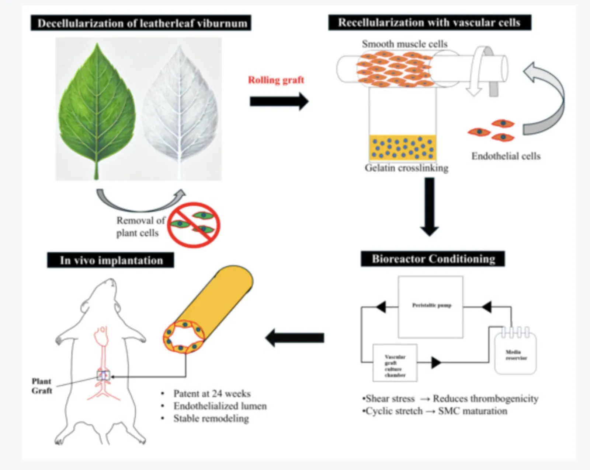
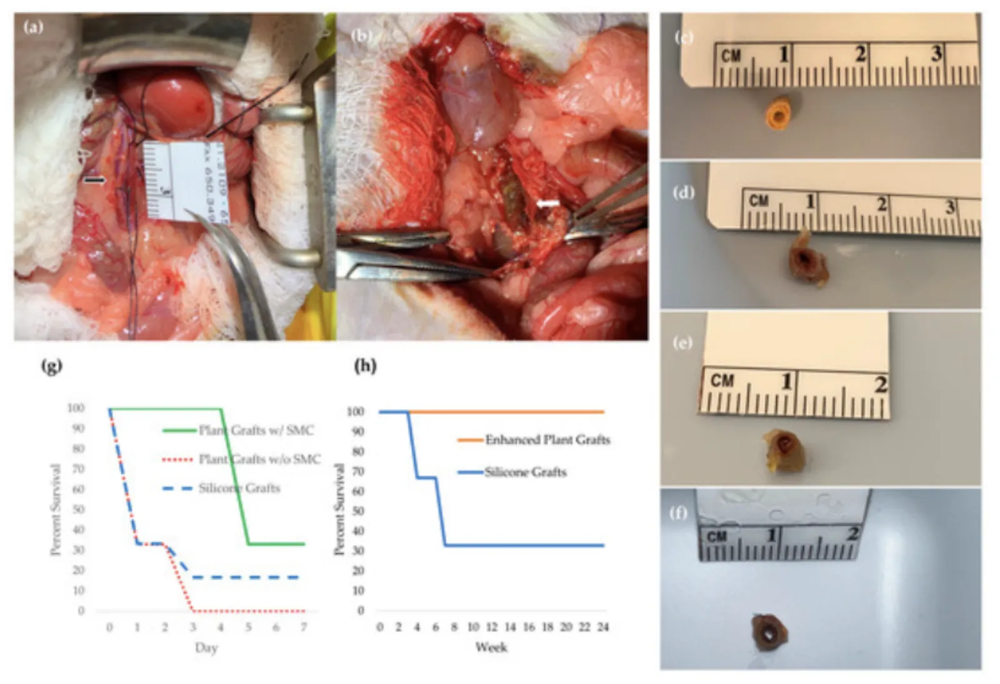

Implantation of Bioreactor-Conditioned Plant-Based Vascular Grafts
Journal of Functional Biomaterials, 17(1):43, 2026
Abstract
Small-diameter synthetic grafts often fail from thrombosis, intimal hyperplasia, and compliance mismatch, highlighting the need for alternatives that better support endothelialization and remodeling. Here, we evaluated multilayer plant-based vascular grafts fabricated from decellularized leatherleaf viburnum reinforced with cross-linked gelatin, seeded with vascular smooth muscle cells and endothelial cells, and conditioned in a perfusion bioreactor to mimic physiological shear stress.
Pre-implant assays confirmed effective decellularization, low residual detergent, and mechanical integrity suitable for surgical handling. In a rat abdominal aorta interposition model, plant-based grafts remained patent at 1, 4, and 24 weeks and showed higher survival than silicone controls. Ultrasound imaging demonstrated flow patterns and resistance indices similar to native vessels, and plant-based grafts maintained significantly higher endothelial cell coverage than silicone controls, reaching native-like density by 24 weeks.
Histology and biochemical assays showed early collagen and elastin coverage comparable to native aorta and increased collagen by 24 weeks. Scanning electron microscopy showed smooth luminal surfaces with minimal thrombus formation, contrasting with the rougher, thrombus-prone surfaces of silicone grafts. These findings indicate that plant-based grafts support endothelialization, maintain long-term patency, and undergo favorable remodeling in vivo, supporting their potential as a biomimetic alternative for small-diameter arterial repair.

